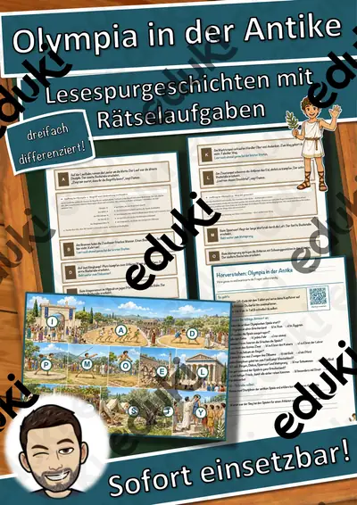

Lesespur: Das Labyrinth des Minotaurus – Lesespurgeschichte mit Rätseln (Klasse 6)
Begib dich mit deiner Klasse auf eine spannende Lesespur in eine griechische Sage! Die Kinder begleiten eine junge Hauptfigur durch Palast, Gänge und Labyrinth und erfahren dabei ganz nebenbei die berühmte Sage von Theseus und dem Minotaurus.
Diese Lesespurgeschichte verbindet motivierendes, sinnentnehmendes Lesen mit echtem Sachwissen zur Antike und schult zugleich das genaue Arbeiten. Das Material ist SOFORT EINSETZBAR und in DREI DIFFERENZIERUNGSSTUFEN (leicht ★ / mittel ★★ / schwer ★★★) angelegt, sodass alle Kinder einer Klasse am selben Thema arbeiten können.WICHTIG: Das komplette Material ist sowohl in FARBE als auch in SCHWARZ-WEISS enthalten – ideal zum Sparen von Druckkosten.DAS IST ENTHALTEN
- Lesespurgeschichte in 3 Niveaus (leicht, mittel, schwer)
- farbiger Lageplan als Suchkarte
- Hörverstehen mit QR-Code zur MP3 (Kinder hören selbstständig mit Kopfhörern)
- vier Aufträge auf dem Weg: ein Verbinde-Rätsel, ein Sach-Quiz, eine Rechenaufgabe und ein Steckbrief
- Rätselseite (Wörter-Suchsel + Wissensfragen)
- Ausmalbild zum Thema
- ausführliches Lösungsblatt für die Lehrkraft
- alles zusätzlich als komplette Schwarz-Weiß-VarianteSO FUNKTIONIERT DIE LESESPURDie Kinder lesen ab START, entnehmen dem Text einen Hinweis auf einen Ort, suchen ihn auf dem Plan und lesen beim dort abgebildeten Buchstaben weiter. Eingebaute Sackgassen dienen der Selbstkontrolle. Am Ende werden die gesammelten Buchstaben umgestellt und ergeben ein geheimes Lösungswort. (Die Lösungen sind selbstverständlich nur im Lösungsblatt für die Lehrkraft enthalten.)INHALTLICHER SCHWERPUNKTGriechische Mythologie: die Sage von Theseus und dem Minotaurus, das Labyrinth des Palastes von Knossos sowie die minoische Kultur auf der Insel Kreta.ABGEDECKTER LEHRPLAN (Klasse 6)
- Geschichte / Gesellschaftswissenschaften (GSE, Mittelschule; anschlussfähig an GPG/Geschichte in Realschule und Gymnasium): Antike – griechische Mythologie und Sagen, minoische Kultur, Unterscheidung von Mythos und Geschichte.
- Deutsch – Lesen mit Texten und Medien umgehen: Lesestrategien anwenden, Texten gezielt Informationen entnehmen, sinnentnehmend und selektiv lesen, Schlüsselwörter nutzen; Selbstkontrolle und Lesemotivation durch die Lesespur; Zuhören: einem Sachhörtext konzentriert folgen und Wesentliches entnehmen (Hörverstehen mit MP3).
- Mathematik – anwendungsbezogene Sachaufgabe im Kontext des Themas (Grundrechenarten und Größen), Ergebnisse deuten.
- Fächerübergreifend / Kompetenzen: selbstständiges Arbeiten, genaues Lesen und Prüfen, Konzentration und Ausdauer, kreatives Gestalten (Ausmalbild).
Geeignet für Freiarbeit, Stationenlernen, Vertretungsstunden, Wochenplan und Homeschooling. Klassenstufe 6 (differenziert einsetzbar auch in angrenzenden Jahrgangsstufen).
Ähnliche Materialien

Sage Lückentext mit Wortspeicher Hörverstehen und Suchsel

Monster Lückentext mit Wortspeicher Hörverstehen und Suchsel

Griechische Sprache Lückentext mit Wortspeicher Hörverstehen und Suchsel

Junge – Hörverstehen mit Lückentext (interaktiv)

Junge Lückentext mit Wortspeicher Hörverstehen und Suchsel

Materialpaket Griechische Götter - Lückentexte mit Wortspeicher, Plakate und Ausmalbilder

Lesespur: Olympia in der Antike – Lesespurgeschichte mit Rätseln (Klasse 7)